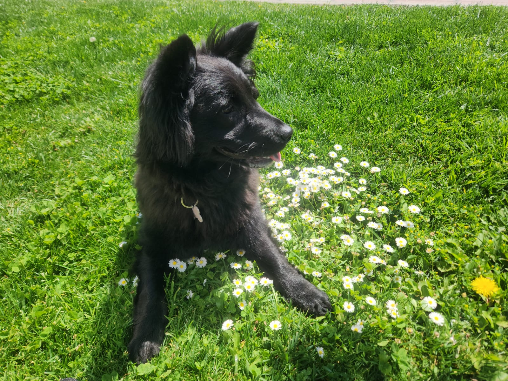
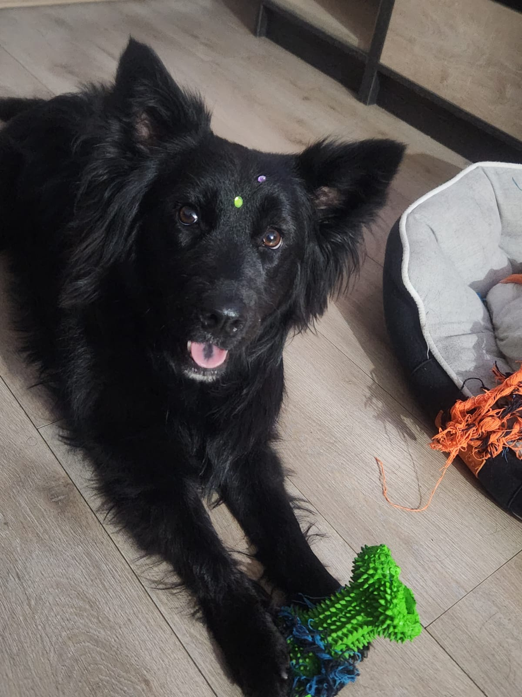

Curriculum Vitae

Tiana
Resumen
Tiana es una perrita muy dosil, es obediente y hace mucho caso a sus dueños. Cuando la sacaqn a pasear, es muy
sociable con otros perros, quiere siempre jugar y nunca se cansa.
Datos
- Nombre: Tiana
- Lugar de nacimiento: Santiago de Chile
- Fecha de nacimiento: 22 de septiembre de 2022
- Edad: 1 año y 11 meses
Caracteristicas
- Color: Negro
- Raza: Mestiza
- Sexo: Femenino
- Patas cortas
- Peso: 17kg
Educación
Tiana desde los 6 meses estuvo en clases de entrenamiento con su adiestrador Jesus, con el que aprendió una serie
de pasos para salir en orden y lograr que le haga caso a sus dueños en la calle y también que pueda caminar
tranquila
-
Los pasos son:
- Abrir y cerrar la puerta repetidas veces para que se acostumbre al sonido
- Sonar las llaves varias veces al día para que controle el sonido de las mismas
- Colocarle su pechera y dejarla un rato con ella puesta sin espectativas de salir
- Colocarle la correa y si esta tranquila darle premio, si se altera no salir con ella de la puerta

Más información